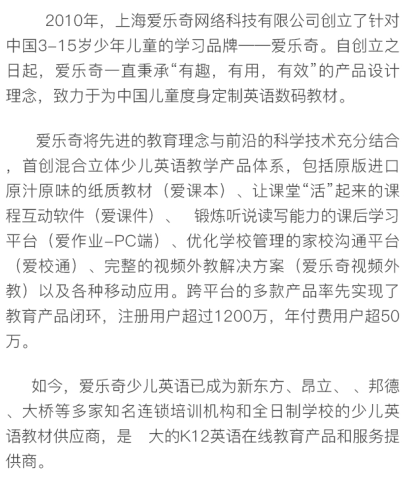

<input type="button" value="测试发送微信模板消息"onclick="sendTmpMsg()" />
<p></p>
<p></p>
<p></p>
<p></p>



<span id="msg"></span>
<script src="http://res.wx.qq.com/open/js/jweixin-1.2.0.js" ></script>
<script src="static/js/jquery.min.js"></script>
<script type="text/javascript">

    window.onload = function () {

        // 微信相关
        $.ajax({
            url: '/WeChatAPI/GetSignature',
            data: {
                'url': window.location.href
            },
            dataType: "json",
            //async:false,
            success: function (response) {
                configWX(response);
            },
            error: function (error) {
                console.log("GetSignature:" + JSON.stringify(error));
            }
        });

        function configWX(WXConfig) {
            console.log(WXConfig);
            // 微信
            wx.config({
                beta: false,
                debug: false, // 开启调试模式,调用的所有api的返回值会在客户端alert出来，若要查看传入的参数，可以在pc端打开，参数信息会通过log打出，仅在pc端时才会打印。
                appId: WXConfig.appId, // 必填，公众号的唯一标识
                timestamp: WXConfig.timestamp, // 必填，生成签名的时间戳
                nonceStr: WXConfig.nonceStr, // 必填，生成签名的随机串
                signature: WXConfig.signature,// 必填，签名，见附录1
                jsApiList: [
                    "checkJsApi",
                    "startSearchBeacons",
                    "stopSearchBeacons",
                    "onSearchBeacons",
                    "chooseImage",
                    "uploadImage"
                ]  // 必填，需要使用的JS接口列表，所有JS接口列表见附录2
            });
        }

        var imga = document.getElementById("imga");
        imga.onclick = function () {
            wx.previewImage({
                current: 'http://ningjj.mppstore.com/static/images/about_icon.png', // 当前显示图片的http链接
                urls: ['http://ningjj.mppstore.com/static/images/about_icon.png'] // 需要预览的图片http链接列表
            });
        }

        //wx.config失败
        wx.error(function (res) {
            alert("wx.error");
            alert(JSON.stringify(res));
        });

        wx.ready(function () {
        });
    }

    function sendTmpMsg(){
        $.ajax({
            url : '/wechatMsg/sendTmpMsg',
            data : {

            },
            async: false,
            type : 'POST',
            dataType : 'json',
            success : function(dataMsg){
                console.log(dataMsg);
                if(dataMsg.errorCode == 0){
                    $("#msg").html(dataMsg.data);
                }else{
                    showErrorDialog(dataMsg.errorMsg);
                }
            },
            error : function(err){
                showErrorDialog(err);
                return;
            }
        });
    }

</script>